6학년 17~18차시 · 블록 수업데이터
데이터
번역가 되기
해결단 23호 미션


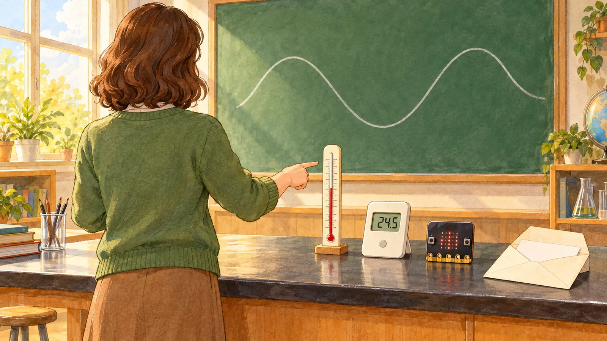
해결단 23호 미션
아날로그 값과 디지털 값의 의미를 알고, 데이터의 종류를 구분해 봅시다.
데이터쌤해결단 여러분, 23호 미션이 왔어요! 과학 선생님이 데이터 번역가를 찾아요.
오늘의 길
- 17차시
- 도입시계 비교
- 활동1온도계 두 개
- 활동2움직임 숫자
- 18차시
- 활동3기록 간격
- 활동4데이터 유형
- 정리의뢰 해결 보고
데이터쌤두 차시 동안 이 길을 따라가요. 활동지 두 장을 옆에 두세요.
오늘 준비물
- 선생님막대·숫자 온도계
- 모둠마이크로비트 V2 1대
- 모둠USB 케이블, 배터리 팩
- 모둠데이터 카드 8장
- 나활동지 두 장, 연필
바늘 시계와 숫자 시계
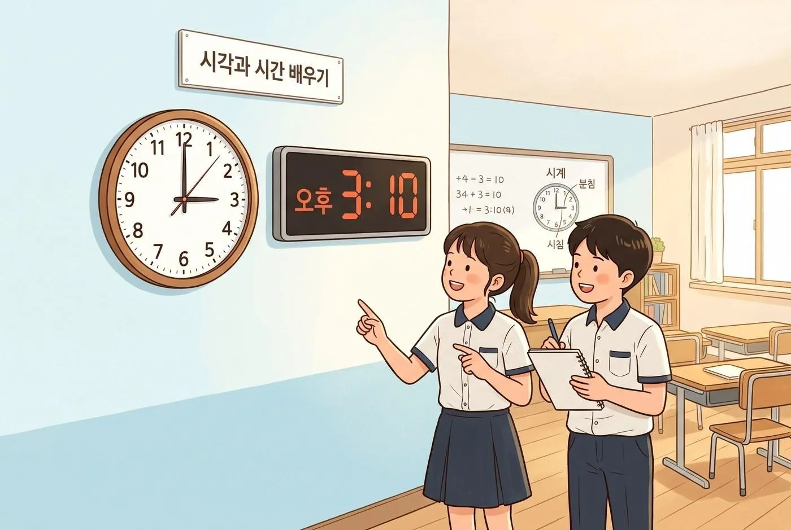
데이터쌤두 시계는 시각을 어떻게 다르게 보여 줄까요? 바늘이 숫자와 숫자 사이에 있을 때도 살펴봐요.

순서쌤바늘은 계속 움직이고, 숫자 시계는 숫자가 딱딱 바뀌어요.
숨은 그림 찾기: 숫자로 보이는 물건
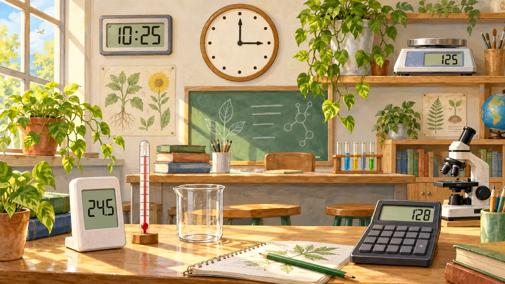
데이터쌤과학 선생님의 의뢰는 세상을 숫자로 바꾸는 일이에요. 숫자로 보여 주는 물건 네 개를 찾아요. 그림을 누르면 하나씩 나와요.
오늘의 학습 문제: 아날로그 값과 디지털 값의 의미를 알고, 데이터의 종류를 구분해 봅시다.
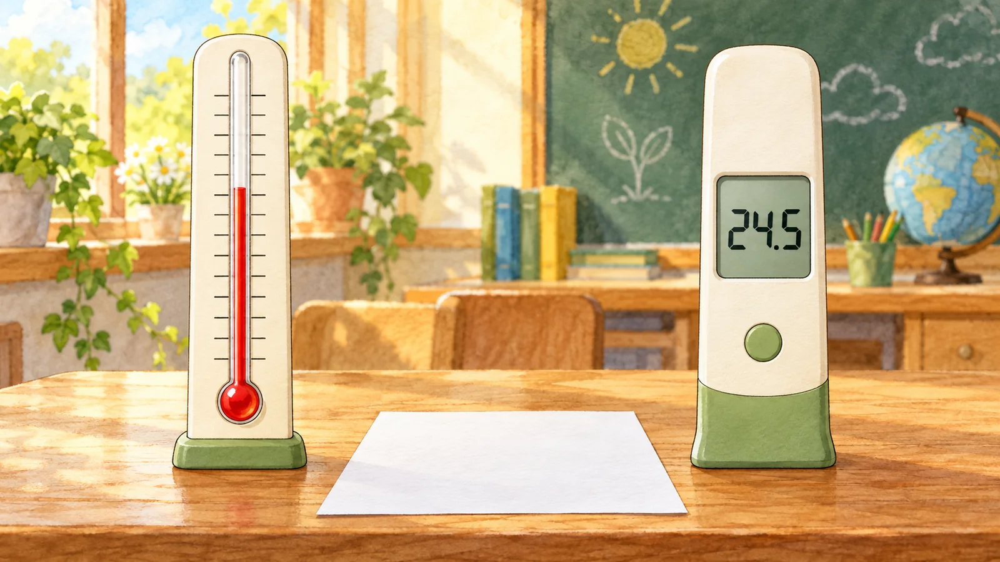
데이터쌤오늘 학습 문제예요. 함께 읽어 봐요.
온도계 두 개를 같은 자리에
데이터쌤막대 온도계와 숫자 온도계를 같은 자리에 놓았어요. 읽은 값은 같을까요?

비트쌤손으로 감싸거나 입김을 불면 값이 바뀌어요. 그대로 둬요.
두 온도계에서 읽은 값 적기
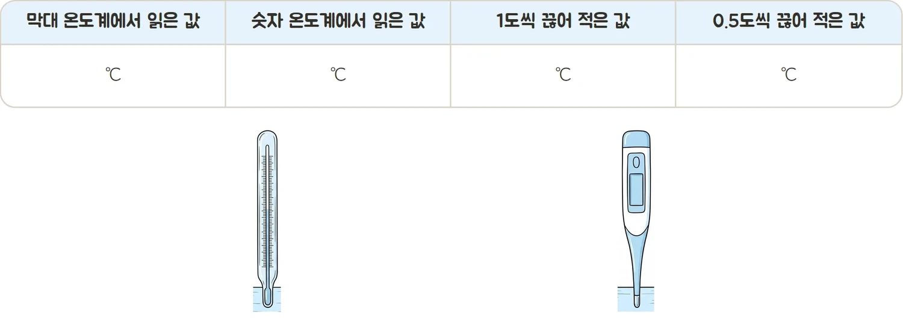
활동지 1쪽 1
데이터쌤두 온도계에서 읽은 값과 1도씩, 0.5도씩 끊어 적은 값을 적어요.
막대 온도계 그리기
활동지 1쪽 1
데이터쌤눈금과 읽은 값을 쓰고, 빨간 기둥 끝을 그려 넣어요.
비트쌤기둥 끝이 눈금 사이에 걸리면 그 자리 그대로 그려요.
막대 온도계 그리기
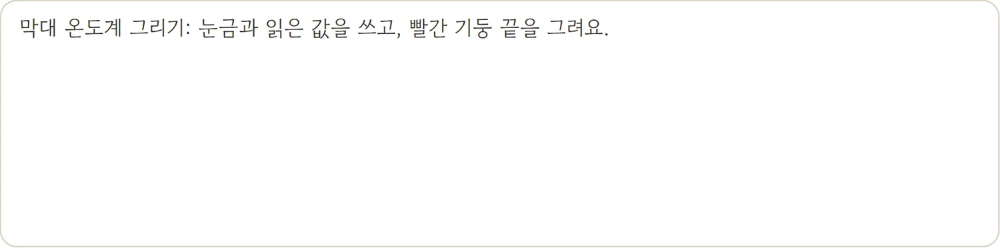
활동지 1쪽 1
B23 · 11 / 39먼저 예측해요
24.5도를 1도씩 끊어 적으면
어떻게 적을까요?
데이터쌤숫자 온도계는 표시창에 숫자만 보여요. 눈금 사이의 값은 어떻게 될까요?
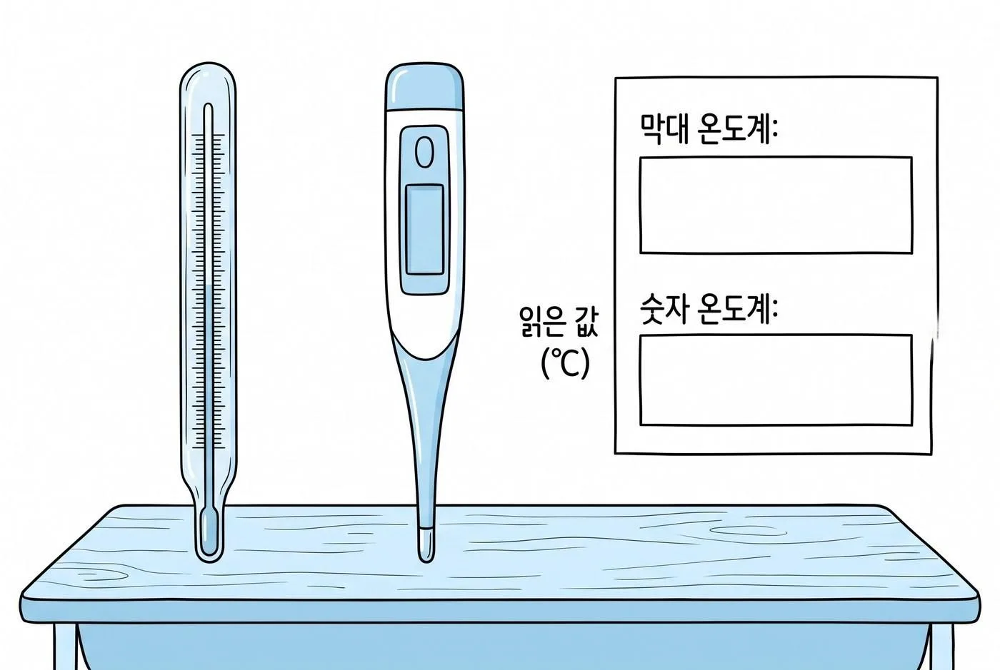
끊은 단위에 맞춰 가까운 값으로 적어요.
눈금 사이 값과 비교하기
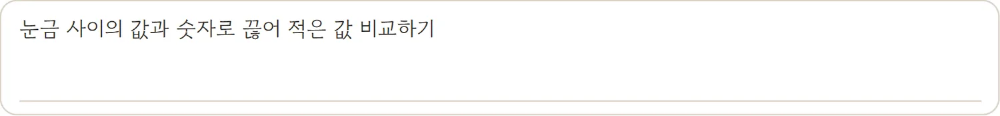
활동지 1쪽 1
데이터쌤막대 온도계는 눈금 사이에도 값이 있고, 끊어 적으면 그 사이가 빠져요. 다르게 느낀 점을 써요.

말랑쌤이어지는 값은 아날로그, 단계로 끊은 값은 디지털이에요.
눈금 사이 값과 비교하기
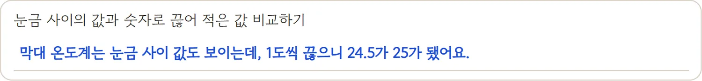
활동지 1쪽 1
B23 · 14 / 39카드 뒤집기: 이어지는 값과 끊은 값
데이터쌤이어지는 값일까요, 끊은 값일까요? 먼저 말해 보고 카드를 눌러 확인해요.
둘 중 하나: 운동 중인 움직임은?
?
데이터쌤한 사람은 달리는 중이고, 한 사람은 쉬는 중이에요. 어느 그래프가 달리는 중일까요?

지킴쌤많이 움직이면 숫자도 크게 오르내려요.
손목 움직임을 곡선으로
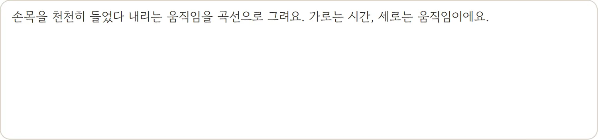
활동지 1쪽 2
데이터쌤손목을 천천히 들었다 내리며 움직임을 곡선으로 그려요. 가로는 시간, 세로는 움직임이에요.
손목 움직임을 곡선으로
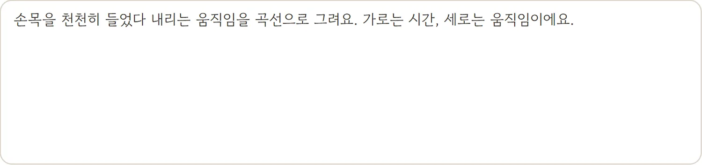
활동지 1쪽 2
B23 · 18 / 39마이크로비트 연결하기

마이크로비트를 연결하고 흔들며 그래프를 살펴요. 흔들기 전에 끈을 손목에 감아요.
마이크로비트 AI 열기 ↗https://createai.microbit.org
데이터쌤그래프는 센서가 보낸 움직임 숫자를 이어 그린 선이에요.
비트쌤연결이 안 되면 선생님 화면의 그래프를 함께 봐요.
먼저 예측해요
마이크로비트를 책상에 가만히 두면
그래프는 어떻게 될까요?
데이터쌤움직임이 없을 때 센서가 보내는 숫자를 떠올려 봐요.
움직임이 없으면 숫자도 거의 변하지 않아요.
다섯 지점의 센서 숫자
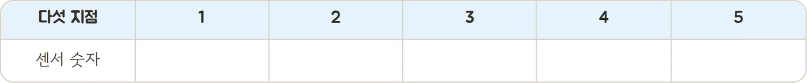
활동지 1쪽 2
데이터쌤손목을 들기도 하며 그래프가 어떻게 바뀌는지 확인해요. 한 선에서 다섯 지점을 골라 숫자를 적고, 곡선의 어디인지 표시해요.
다섯 지점의 센서 숫자
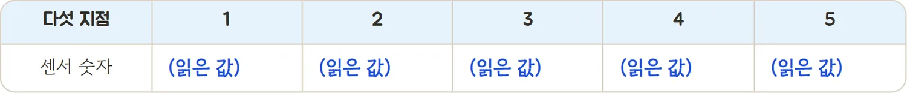
활동지 1쪽 2
B23 · 22 / 3917차시 끝! 잠깐 쉬어요
새싹쌤다음 시간에는 센서로 걸으며 기록하고 데이터를 네 묶음으로 나눠요.
걸으며 빛 세기 기록하기

A 버튼 누를 때 빛 밝기를 수로 출력하는 기본 코드를 살펴요. 한 명이 창가에서 안쪽으로 천천히 걷고, 나머지는 10초마다 A를 눌러 값을 적어요.
MakeCode 열기 ↗https://makecode.microbit.org
데이터쌤같은 길을 이번에는 30초마다 적어 나란히 비교할 거예요.
MakeCode 기본 코드 살펴보기
데이터쌤A 버튼 누를 때 안에 수 출력 (빛 밝기)를 넣어요. 빛 밝기 블록이 활동지의 빛 세기 값을 보여 줘요.
시각마다 빛 세기 적기
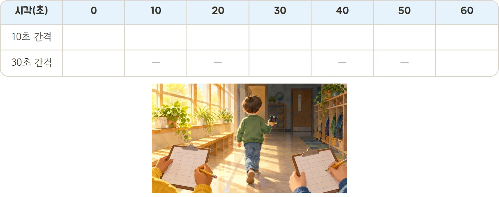
활동지 2쪽 3
데이터쌤10초 간격과 30초 간격으로 빛 세기 값을 적어요. 30초 간격은 빈 칸에 줄을 그어 둬요.
먼저 예측해요
30초마다만 적으면
10초 사이에 잠깐 어두워진 곳을 알 수 있을까요?
데이터쌤다음 체험에서 분홍 막대가 30초 기록이에요. 10초 막대와 비교해 봐요.
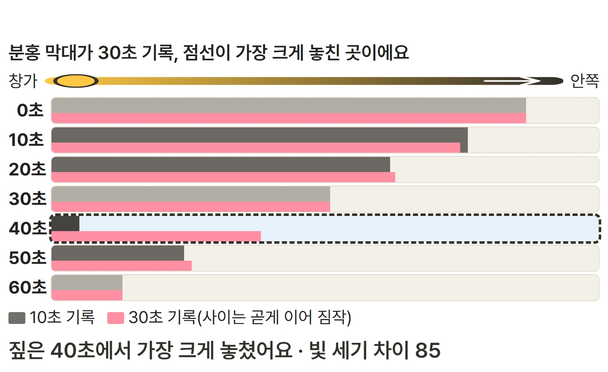
기록 사이 변화는 넓은 간격에서 사라질 수 있어요.
체험: 기록 간격 비교하기
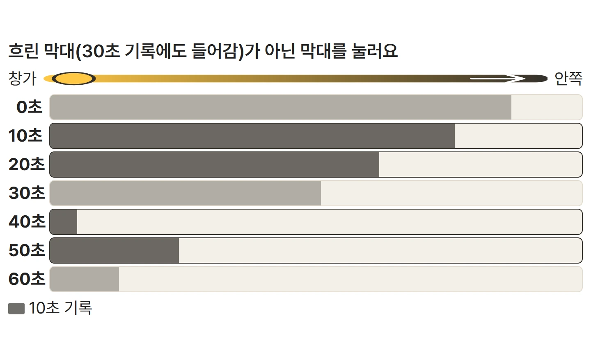
① 처음: 10초 기록 막대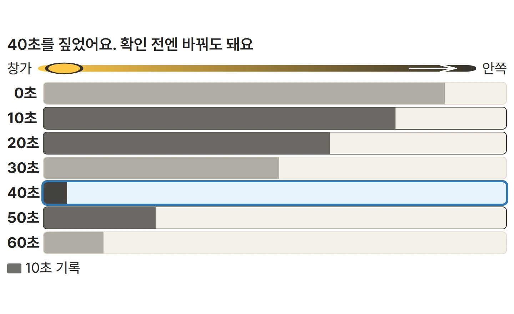
② 가장 크게 놓칠 곳 짚기③ 30초 기록과 비교하기체험 열기 ↗https://edudaum.vercel.app/B23/
데이터쌤흐리지 않은 막대 가운데 30초 기록이 가장 크게 놓칠 곳을 짚고, 확인하기를 눌러요.
막대그래프 두 개 그리기
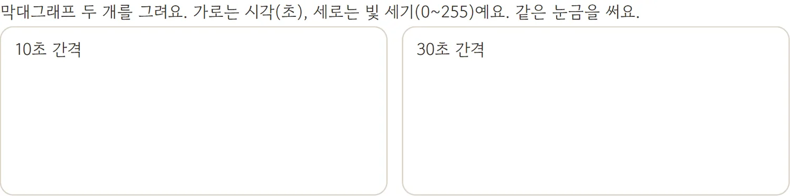
활동지 2쪽 3
데이터쌤같은 눈금으로 10초와 30초 기록 막대그래프를 나란히 그려요.
막대그래프 두 개 그리기
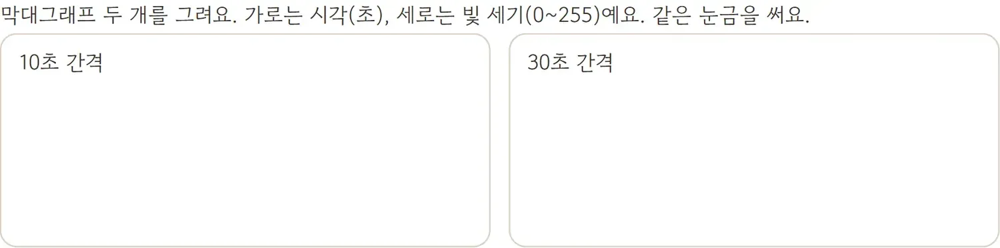
활동지 2쪽 3
B23 · 30 / 39놓친 변화 찾기: 활동지에 쓰기
데이터쌤23·24장 막대에서 놓친 변화를 한 가지 쓰고 기록에도 표시해요.
지킴쌤도전: 온도 센서로 바꾸어 기록해 보기
활동지 2쪽 3
카드 뒤집기: 데이터 네 묶음
데이터쌤데이터 카드 여덟 장은 수·글·이미지·소리 중 어디일까요? 먼저 말해 보고 눌러 확인해요.
데이터 카드 나누기
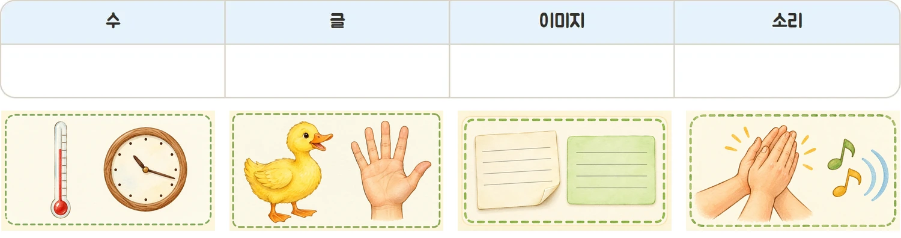
활동지 2쪽 4
데이터쌤카드 번호를 알맞은 칸에 적어 네 묶음으로 나눠요.
체험: 0과 1 그림 탐정
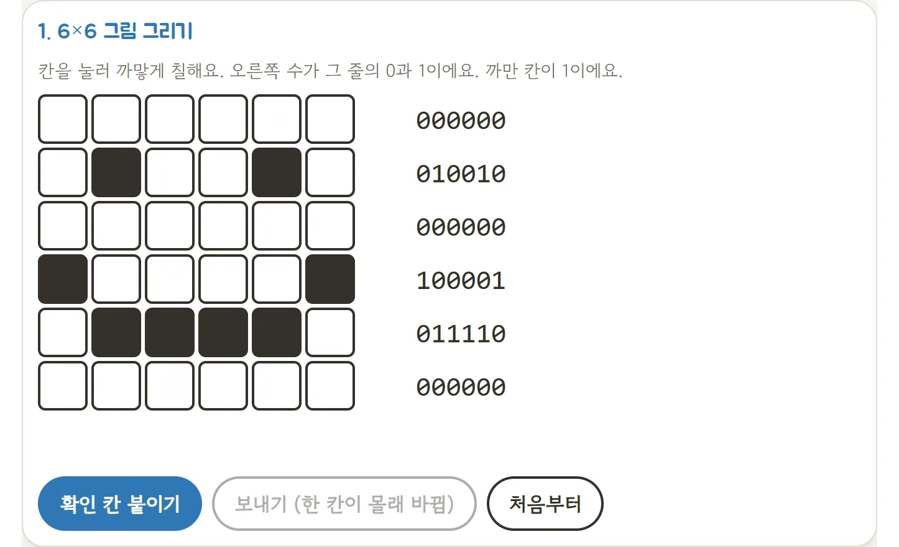
① 칸을 눌러 그림 그리기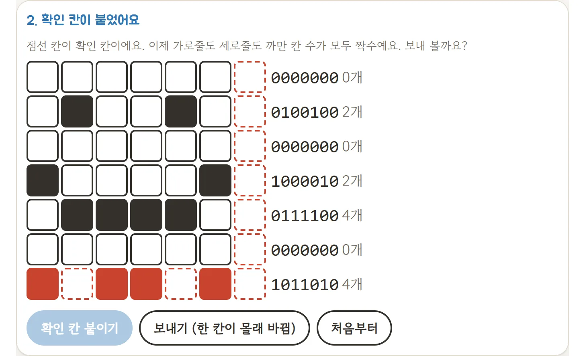
② 확인 칸까지 붙인 숫자체험 열기 ↗https://edudaum.vercel.app/lab/pixel/
데이터쌤까만 칸은 1, 흰 칸은 0이에요. 그림이 숫자로 바뀌는 모습을 봐요.
그림과 소리가 숫자가 되는 예
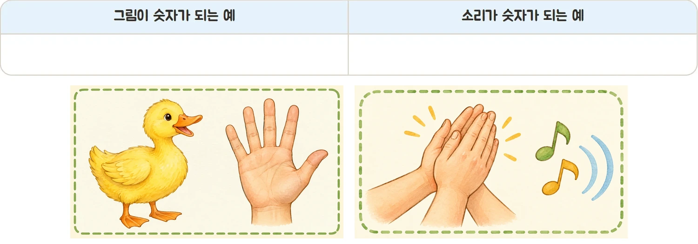
활동지 2쪽 4
데이터쌤그림이 숫자가 되는 예와 소리가 숫자가 되는 예를 각각 써요.
비트쌤앞에서 배운 그림 숫자표를 떠올려요.
아날로그와 디지털 한 문장
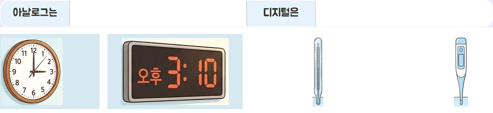
활동지 2쪽 블록 돌아보기
데이터쌤아날로그는 이어지는 값, 디지털은 단위로 끊은 값이라고 내 기록으로 한 문장씩 써요.
의뢰 해결 보고
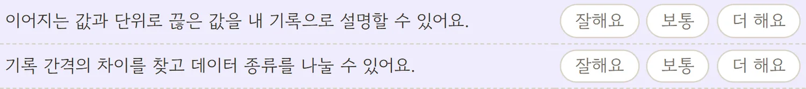
활동지 2쪽 블록 돌아보기
- 아날로그는 이어지는 값, 디지털은 단위로 끊은 값이에요.
- 센서는 변하는 상황을 정한 간격마다 숫자로 바꿔요. 간격을 넓히면 사이의 변화를 놓칠 수 있어요.
- 센서 값은 인공지능이 배우는 데이터가 돼요.
- 활동지 두 장을 붙여 제출해요.
의뢰 해결 보고
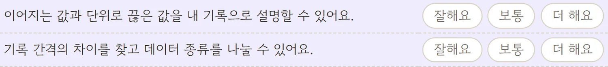
활동지 2쪽 블록 돌아보기
B23 · 38 / 39
미션 해결!
해결단 23호 미션 해결 보고
데이터쌤데이터 번역가 임무 완성! 다음 시간에는 우리 반 자료를 나누고 AI에게도 나누게 해 봐요.
다음 해결단 24호 미션: 안전 담당 선생님 의뢰